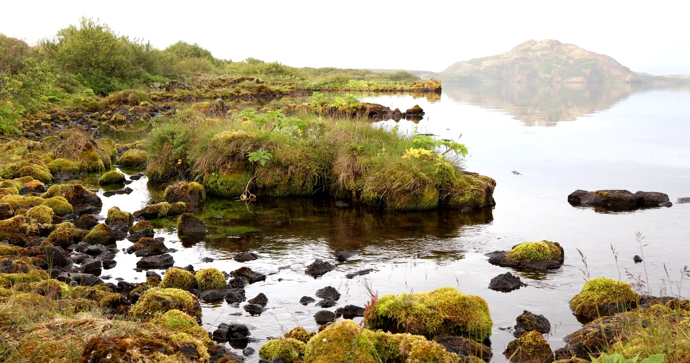
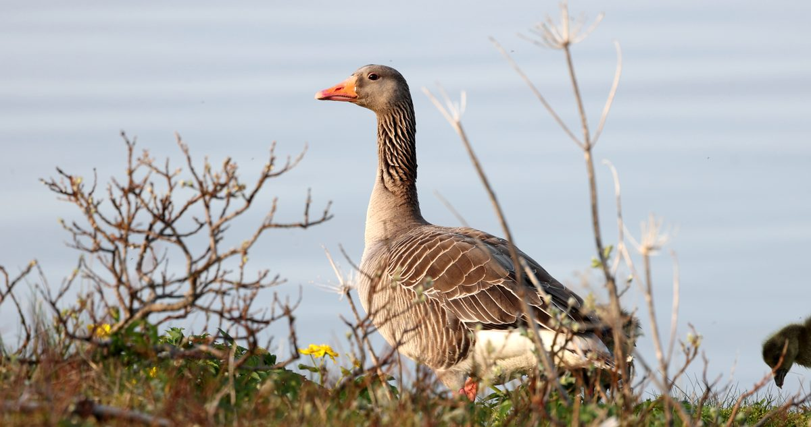
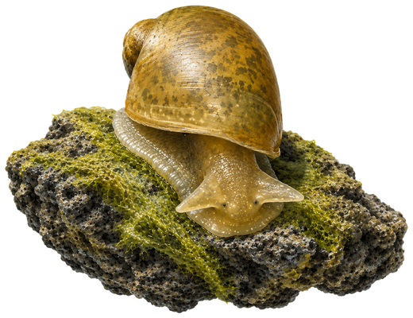
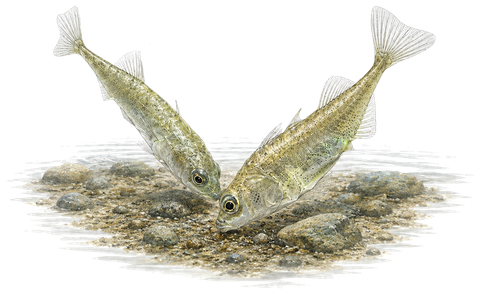

Um myndina
Þingvallavatn er stærsta stöðuvatn Íslands og ein af náttúruperlum þjóðarinnar. Undir kyrrum fleti þess leynist veröld bleikju, urriða og smádýra sem hafa þróast í einangrun um árþúsundir. Þessi heimildamynd fylgir Jakobi Sindra Þórssyni á veiðum við vatnið þar sem hann fer yfir fluguveiði við vatnið, fjallar um lífríkið, hegðun fiskanna og nálgast náttúruna af þolinmæði. Viðtöl við vísindamenn sem rannsakað hafa fiskistofna vatnsins gefa fræðslunni dýpi og varpa ljósi á framtíðarhorfur þessa einstaka vistkerfis.

Hvernig verkefnið hófst
Eldra, sjálfstætt verkefni um Þingvallavatn varð kveikjan. Þó mun minna í sniðum náði það andrúmslofti og anda vatnsins og leiddi til heimildamyndarinnar sem hefur verið í tökum frá sumrinu 2024.
Þemu

Þingvallavatn og þjóðgarðurinn
Sérstaða vatnsins, sagan og staðurinn sem geymir bæði náttúru og menningararf þjóðarinnar.
Af hverju þetta skiptir máli
Meginþráðurinn er veiðifræðsla: Jakob Sindri kennir hvernig á að lesa vatnið, skilja hegðun bleikju og urriða og nálgast veiðina af þolinmæði. Viðtöl við vísindamenn sem rannsakað hafa fiskstofna vatnsins dýpka þá fræðslu og varpa ljósi á framtíðarhorfur stofnanna. Veiðimenn eru oft meðal mestu náttúruunnenda og bera djúpa umhyggju fyrir lífríkinu sem þeir stunda veiðar í. Myndin byggir á þeirri sömu eftirtekt og virðingu og notar veiðina til að opna fyrir stærri umræðu um lífríki, vistkerfi og náttúru Þingvallavatns.
Þingvallavatn er einstakt á heimsvísu, bæði vegna jarðsögu þess og þess lífríkis sem hefur þróast í einangrun um árþúsundir. Að segja sögu þess er að segja sögu um náttúru, vísindi, menningu og samband fólks við landið. Þannig hefur myndin fræðslugildi langt umfram veiðina sjálfa og á erindi við breiðan hóp, frá veiðimönnum til náttúruunnenda, vísindamanna og almennings.
Stillur
Úrval mynda úr verkefninu: lífríki, landslag og veiði við Þingvallavatn.





Leggðu verkefninu lið
Þetta er sjálfstætt verkefni. Stuðningur, í hvaða mynd sem er, skiptir miklu máli.
Í samstarfi við


Styðja fjárhagslega
Auðveldast er að millifæra beint á reikninginn:
- Reikningsnúmer
- 0318-26-091302
- Kennitala
- 130291-2879
Einnig er hægt að hafa samband vegna annarra greiðsluleiða.
Deila sögu eða myndefni
Þekkir þú sögu, stað eða tengingu við Þingvallavatn sem á heima í myndinni? Eldra myndefni, ljósmyndir eða heimildir geta nýst verkefninu vel.
Hafa samband
Ræða samstarf
Tengingar við fjölmiðla, stofnanir eða dreifingaraðila eru vel þegnar. Einnig sérfræðiþekking, faglegt samstarf eða aðkoma fyrirtækja og stofnana.
Hafa samband um samstarf